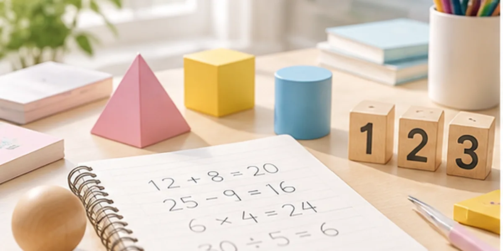
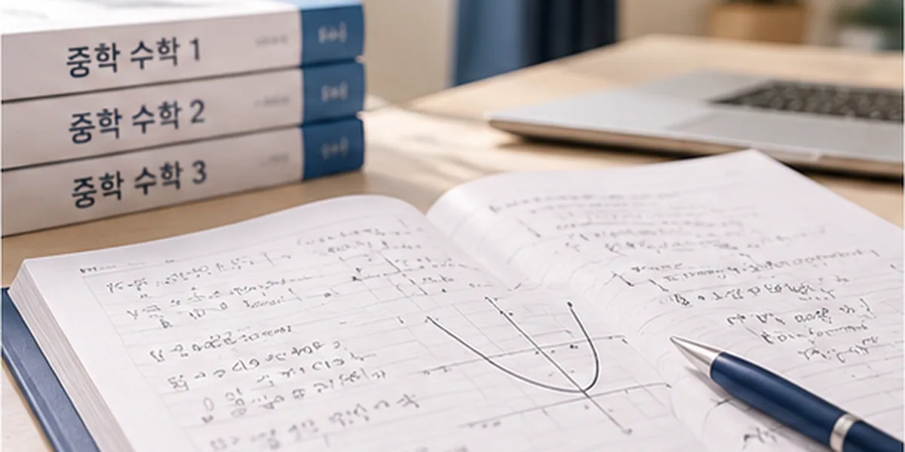
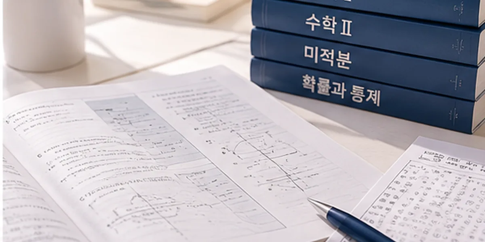

머릿속으로만 풀다가 실수하는 경우
풀이 과정을 어디까지 적는지, 실수가 어느 단계에서 생기는지 확인합니다.
개념·유형·문제 적용·내신까지
풀이 습관부터 점검하는 1:1 수학수업
괴산군 수학과외는 선택지별로 맞고 틀린 이유를 적어 보며 개념·유형·문제 적용 가운데 헷갈리는 개념을 가려내고, 다니는 학교 진도에 맞춰 수업 순서를 정합니다.
상담에서는 최근 수학 시험지와 풀이 노트를 보며 풀이 과정 가운데 답은 골랐지만 다른 선택지가 왜 틀렸는지 말하지 못하는 부분을 확인합니다.
풀이 과정을 어디까지 적는지, 실수가 어느 단계에서 생기는지 확인합니다.
유형을 외운 것인지 원리를 이해한 것인지 구분해 살펴봅니다.
문제의 조건을 보고 필요한 개념을 떠올리는 과정을 점검합니다.
시험 범위와 남은 기간을 확인해 우선 보완할 단원과 문제 유형을 정합니다.

연산을 정확하게 하는 습관을 만들고, 분수·도형 개념과 문장제 풀이를 차근차근 다집니다.
괴산군 초등학생과외 보기
문자와 식, 함수, 도형 단원을 유형별로 정리하고 학교 내신과 서술형을 준비합니다.
괴산군 중학생과외 보기
흔들리는 단원을 다시 세우고 내신 문제와 모의고사 문제에 개념을 적용하는 연습을 합니다.
괴산군 고등학생과외 보기공식과 정의가 어떻게 만들어졌는지 이해하고 설명할 수 있는지 확인합니다.
자주 나오는 유형을 구분하는 기준과 유형별 풀이 방법을 정리했는지 살펴봅니다.
처음 보는 문제에서 필요한 개념을 골라 풀이를 시작하는 과정을 점검합니다.
학교 시험 범위와 서술형 비중을 확인해 준비 순서를 정합니다.
많이 풀어도 틀린 문제를 다시 보지 않으면 같은 실수가 다음 시험에서도 이어질 수 있습니다.
앞 단원 개념이 비어 있으면 새 단원에서 막히는 부분이 점점 늘어날 수 있습니다.
과정을 적지 않으면 실수를 찾기 어렵고 서술형 점수에도 영향을 줄 수 있습니다.
평소 정리 없이 시험 기간에 몰아서 공부하면 범위를 다 보지 못할 수 있습니다.
괴산군 학교는 청안중학교·괴산고등학교처럼 괴산읍과 여러 면에 나뉘어 있고 시험 일정이 학교별로 달라, 다니는 학교 범위의 문제로 선택지 이유 쓰기를 합니다.
시험 범위와 날짜를 정리해 준비 기간을 계산합니다.
시험 범위 안에서 개념이나 유형이 흔들리는 단원을 찾습니다.
풀이 과정 쓰기와 응용 문제를 시험 범위에 맞춰 연습합니다.
괴산읍에 사는 학생은 수학 선택지 이유를 적어 볼 시간을 넣어 화상수업 요일을 정합니다.
다니는 학교와 최근 수학 시험지를 보여 주시면 선택지별로 맞고 틀린 이유를 함께 적어 보고, 이유를 대지 못한 선택지의 개념부터 수학 수업 순서를 정합니다.
네, 현재 수준에서 시작합니다. 어려워지기 시작한 단원의 개념부터 다시 다지고, 학교 시험 범위의 문제로 차례로 이어 갑니다.
계산 실수는 원인을 나눠 보면 줄이는 방향을 잡을 수 있습니다. 서두르는 습관인지, 풀이를 적지 않는 습관인지, 개념이 흔들리는 것인지 확인하고 수업에서 풀이 습관을 함께 점검합니다.
네, 중학생 수학 서술형도 대비하실 수 있습니다. 학교 시험의 서술형 비중을 확인한 뒤 풀이 과정을 조건에 맞게 쓰는 연습을 시험 범위 안에서 진행합니다.
네, 고등학생 수학은 내신과 모의고사를 함께 고려해 준비합니다. 다음 시험 일정과 모의고사 결과를 확인한 뒤 시기별로 두 준비의 비중을 정해 안내드립니다.
괴산군 수학과외 비용은 정해진 한 가지 금액이 아니라 학년과 목표, 주당 수업 횟수와 1회 수업 시간에 따라 달라집니다. 방문과외인지 화상과외인지와 선생님 조건도 반영되므로 상담에서 학생 상황을 들은 뒤 안내드립니다.
방문수업 가능 여부는 상담 시 확인합니다. 괴산군은 1개 읍·10개 면, 모두 11개 읍·면으로 이루어져 있어, 사는 곳과 원하는 시간을 알려주시면 방문할 수 있는 선생님 일정이 있는지 확인한 뒤 안내드리며 미리 약속드리지 않습니다. 실시간 화상수업은 사는 곳과 관계없이 상담하실 수 있습니다.
네, 수학과 과학을 함께 상담하실 수 있습니다. 한 선생님이 두 과목을 맡는 방식과 과목별로 다른 선생님을 연결하는 방식이 있어, 학생의 진도와 일주일 일정을 보고 정합니다.
수학 객관식 문제를 풀 때 선택지별로 왜 맞고 왜 틀린지 짧게 적고, 이유를 대지 못한 선택지의 개념을 다시 공부합니다. 상담하실 때 학년·학교·사는 읍·면을 알려주시고 최근 시험지를 보여 주시면, 헷갈렸던 선택지부터 같이 짚어 봅니다. 방문 가능 여부와 선생님 조건은 원하는 요일과 시간을 들은 뒤 안내드립니다.
네, 상담 후 무료 시범수업으로 선생님의 설명 방식과 수업 흐름을 먼저 확인하실 수 있습니다. 시범수업 뒤 정식 수업 여부를 정하시면 되며, 세부 조건은 상담 시 안내드립니다.
사는 읍·면과 다니는 학교, 수학에서 두 선택지 사이에서 자주 헷갈리는 문제를 알려주시면 괴산군 수학과외 상담에서 화상수업 방법을 먼저 안내하고, 방문 가능 여부는 따로 확인합니다.
괴산군 수학과외 무료 상담 신청최종 업데이트: